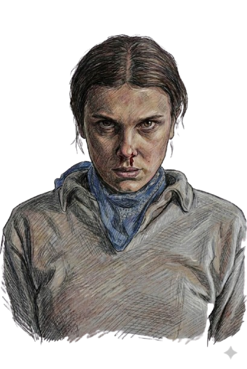

Echo-011
Telekinetic Test Subject


Eleven: Echo-011
Born Jane Ives, Eleven is a powerful psychokinetic escapee from Hawkins Lab. As Echo-011, she represents the pinnacle of clandestine experimentation—a living weapon whose telepathic "echoes" can bridge dimensions and tear through reality.
Driven by a fierce love for her friends, she channels her trauma into immense power, serving as the only shield against the Mind Flayer. Whether closing Gates or battling in the Void, she is the ultimate psychic survivor.
Let's Fight